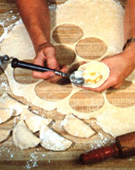
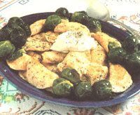

An old-world entree to brighten winter menus:
Karen Ducayne
Unfortunately, about the time of year when dinner starts to become the highlight of an otherwise drab winter day, the meals-alas-often seem to be infected by the sameness of the gray weather. And when that happens, it's time for the chief cook to broaden his or her recipe repertoire. (Of course, if the resulting new dish is delicious, relatively inexpensive to prepare, filling, and unusual enough to intrigue the jaded palates of adults-yet not repel the suspicious tastebuds of small fry-so much the better.)
Well, I'm proposing the perfect candidate for chasing away the I'm-tired-of-casserole/ boiled-dinner/stew blues: pierogi, little ribsticking stuffed dumplings. They're among my family's favorite cold-weather foods, and I'm pretty confident that they'll get a warm reception at your dinner table, too. The recipe was passed along to me by my Ukrainian grandmother, and will probably look familiar to folks of Slavic descent.
The name (it's also spelled "pirogi" and "pieroghi") is the plural form of the Russian word pirog, which means a small turnover or pie. And although the Russians claim credit for developing this particular dish, one form or another of the dumpling-including Italian ravioli and American fried pies-appears in almost every nation's cuisine.
PIEROGI PASTRY
My recipe is slightly time-consuming, so it might be a good idea to prepare it the day before you actually want to serve your pierogi, or at least to set aside an afternoon in which to tackle it. There are two parts to the turnovers, so I'll start with instructions for making the dough. You'll need these ingredients:
3 cups of unbleached flour
1/2 teaspoon of salt
1 egg (slightly beaten)
3/4 cup of water
Combine the flour and salt in a bowl, add the slightly beaten egg, and then stir in just enough water to make a ball of dough. The pastry will be stiff, but you should be able to roll it out, using a little muscle (if it's really unmanageable, add another splash of water). Lightly flour a board or countertop, and roll the dough to an even 1/8" to 1/16" in thickness.
Once that's done, cut out some circles, using a 3"-diameter biscuit cutter or perhaps the floured rim of a glass. (Actually, I prefer to slice the pastry-freehand-into small rectangles, using a sharp knife, since this practice allows me to make use of odd sections and all but eliminates the need for kneading and rerolling scraps.)
FANCIFUL FILLINGS
In the center of each pastry section, place a teaspoonful of stuffing. Just about anything that suits your family makes an appropriate filling. My personal favorite is mashed potatoes (don't add any liquid), into which I stir grated cheddar cheese, minced onion, and salt and pepper to taste. Another popular stuffing consists of 1 cup of farmer's or cottage cheese mixed with an egg, herbs, and salt and pepper.
If you'd prefer a more traditional flavor, however, try sauerkraut-drained and chopped-combined with minced onion, mushrooms, sour cream, and salt and pepper. Or, if you have lots of time, you can reconstitute dried black Japanese mushrooms and simmer them with minced onion. Then add some black bread crumbs to the mushrooms, and stir in chopped-up hard-boiled egg, sour cream, and seasonings to taste. (Needless to say, you can experiment with different meat, vegetable, and cheese combinations in order to find a few that please your resident gourmets.)
THE WRAP-UP
After you've placed the filling on the cutout pastry, fold the dough in half to form a semicircle (or a squarish little package if you've cut rectangles), then moisten and crimp the edges to seal them firmly.
Now, fill a large kettle with water and place it on high heat. Once the liquid starts to boil frantically, drop the pierogi-a few at a time-into the container. Then, when the little turnovers float to the top (it'll take one or two minutes), they'll be done. Remove each one with a slotted spoon and set it aside to drain in a colander or on a towel.
When all of the dumplings are cooked, melt half a cup of butter in a large, heavy frying pan and sauce the pastries until they're piping hot. The finished pierogi can then be adorned with sour cream or yogurt . . . or topped with browned bread crumbs for an interesting contrast in textures.
Pierogi can be stored in the refrigerator for four or five days or frozen for up to six months. If you do decide to freeze the turnovers, though, be sure to remove them from the boiling water and drain them on a terry (or linen) towel until they're thoroughly dry. Then package and freeze the little pieces. When you're ready to serve the stored delicacies, boil them again until they float, and finish up with the same butter bath and toppings already described.
Once you've learned how to make these dumplings, you'll find that pierogi are at home almost anywhere on a menu. So give these versatile little turnovers a chance. Who knows . . . instead of grimly dishing out a casserole and daring your diners not to finish it, you may wind up worrying whether you're going to have enough pierogi for seconds!
|
 |
 |
|